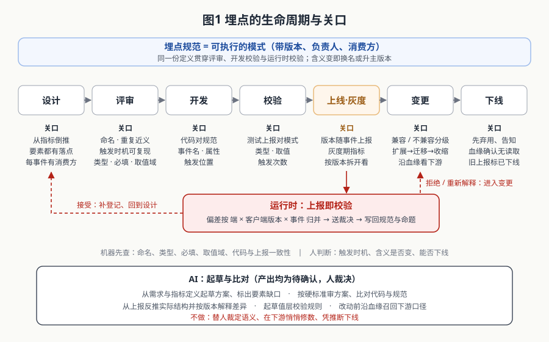
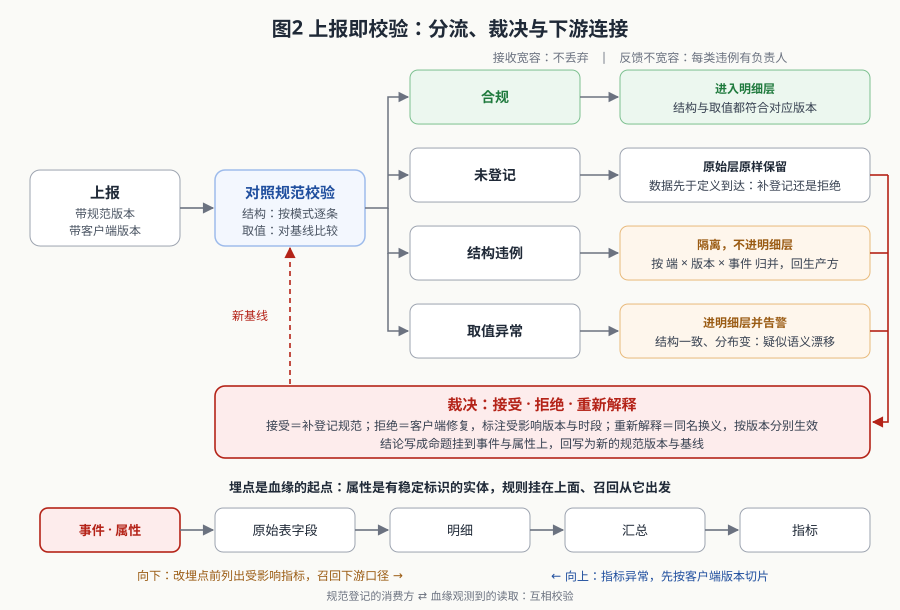
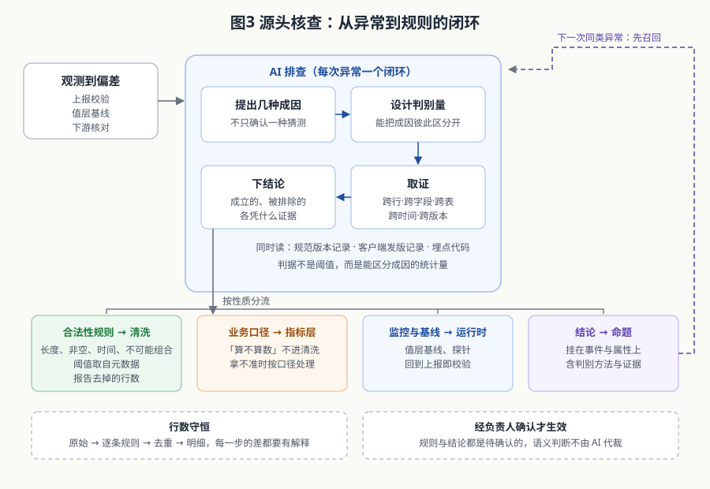

第三篇说接入层的常态是「数据先于定义到达」；第四篇把指标拆成要素，计数实体、时间基准、过滤范围都要在明细里有落点；第五篇的血缘从入仓的表开始画。这三处都在数据源头的下游。这一篇往上游走一步：数据从哪几类来源进入平台，各自的治理重心在哪里；其中变化最多、最难治理的客户端埋点，怎样把规范做成元数据，从设计到下线要过哪些关口，上报后怎样校验、裁决；以及 AI 在源头核查里真正承担的工作：把多数无法用一条查询回答的数据问题查清楚，再沉淀成清洗与校验规则。
一、数据从哪里来
1.1 源头决定上限
数据加工是一串变换：清洗、关联、聚合、派生。每一步都只能使用上一步已有的信息。没有记录下来的事实，下游补不出来；含义含混的字段，下游只能猜。信息在源头丢失，在下游不可逆。
这与制造业的质量观一致。Deming 管理十四条的第三条是：停止依赖检验来获得质量，从一开始就把质量做进产品，以消除大批量检验的需要[1]。数据平台的「检验」是下游的核查与对账，它们必不可少，却只能发现问题，不能消除问题的来源。
1.2 几类来源，各有各的治理重心
进入数据平台的数据，按来源大致可以分成六类：
| 来源 | 结构由谁定义 | 变化的方式 | 典型问题 | 治理抓手 |
|---|---|---|---|---|
| 业务库同步 | 本组织的后端，经数据库迁移变更 | 低频，随后端发版，一次一个版本 | 改表未通知下游、删改历史行、同步延迟 | 变更数据捕获、表结构变更评审 |
| 服务端日志 | 本组织的服务 | 中频，随服务发版 | 格式不统一、字段随代码散落 | 日志规范、统一采集 |
| 客户端埋点 | 本组织，但实现散在各端客户端 | 高频，随客户端发版，多个版本长期并存 | 漏报、重报、补报、类型与含义漂移 | 跟踪计划、上报校验、版本归因 |
| 网页爬取 | 目标网站，与本组织无约定 | 不可预期，对方改版即失效 | 结构突变、反爬、合规边界 | 抓取协议与授权、解析器监控 |
| 外购数据与资讯 | 供应商，按合同交付 | 按供应商节奏，常有回溯修订 | 口径与本组织不一致、修订覆盖历史 | 合同中的数据说明、到货校验与版本留存 |
| 结构化导入 | 合作方或业务人员，以文件或表格交付 | 不定期，模板常被手工改动 | 列错位、编码与单位不一、重复导入 | 模板版本化、导入前预检 |
Rahm 与 Do 对数据质量问题的经典分类，按「单一来源还是多来源」「模式层还是实例层」两个维度展开：单一来源的问题来自缺少约束和录入错误，多来源的问题来自彼此冲突的结构与表示[2]。上表可以看作这两个维度在今天常见来源上的落点：业务库有数据库约束，问题多在实例层；爬取、外购与导入的结构由外部决定，模式层问题频发，而且一旦与本组织的数据关联，就变成多来源问题。爬取另有合规一面，网站通过机器人排除协议声明哪些路径允许抓取[3]，这是采集的前提而不是可选项。
1.3 为什么埋点最有特点
六类来源里，客户端埋点最难治理，原因是结构性的：
- 生产者在内部，却分散且版本并存。埋点代码写在各端客户端里，随应用发布；用户不升级，旧版本就一直上报。任一时刻线上都并存多个版本的实现，对同一事件的理解未必相同。业务库同步一次只有一个版本，爬取与外购的结构由外部决定，都没有这种「同一个来源同时说几种话」的局面；
- 改的人和用的人不在一处。改埋点的是客户端开发，用数据的是分析与数据开发，通常不在同一个评审流程里。Sculley 等人在讨论机器学习系统的技术债时，把「未声明的消费者」和「不稳定的数据依赖」列为主要风险：上游并不知道谁在用它的输出，改动时也就无从顾及[4]；
- 语义藏在触发时机里。同一个事件名，在按钮按下时报还是在服务端确认后报，结构完全一样，含义却不同；
- 出错是静默的，而且量最大。字段少报、类型变化、含义改变，往往不会让任何作业失败。Song 与 He 在研究数据校验时指出，复杂的生产管道里，上游数据源常以意想不到的方式变化，使下游应用静默出错，排查代价很高[5]。埋点又往往是平台里行数最多的来源，静默的错误会被放大到每一个下游指标。
所以下面几节以埋点为主线展开。其中「规范即元数据」「上报即校验」「偏差送裁决」三条，对其它五类来源同样适用，只是落点不同：外购数据的规范写在合同的数据说明里，导入的规范是模板的版本，爬取的规范是解析器对页面结构的假设。
二、埋点规范就是元数据
2.1 跟踪计划：一份带负责人的数据集说明
业界通常把埋点规范称为跟踪计划（tracking plan）。Snowplow 的文档对它的定义很准确：跟踪计划是一份「有文档的数据集」，记录采集什么数据、在哪里采集、含义是什么、怎么使用；它的核心是一个明确的负责人和一组会受上游变更影响的消费方，并以数据契约为基础，作为生产方与消费方之间的正式约定[6]。
放回本系列的框架，跟踪计划同时承担三种元数据：第二篇的结构描述，第四篇语义要素在源头的落点，第五篇血缘的起点。
2.2 一条埋点要登记什么
| 层次 | 要素 | 回答的问题 | 缺了会怎样 |
|---|---|---|---|
| 事件 | 名称 | 是什么动作 | 同一动作多个名字，或一个名字多种动作 |
| 事件 | 触发时机 | 在什么条件满足时上报 | 「点击」「展示」「请求成功」混在一起，转化率无从解释 |
| 事件 | 行为主体 | 谁做的动作，用户还是系统 | 「消息已发送」分不清是用户发的还是推给用户的 |
| 事件 | 负责人与消费方 | 谁维护、谁在用 | 改动时不知道要通知谁，下线时不敢下 |
| 事件 | 规范版本与引入版本 | 从哪个规范版本、哪个客户端版本起生效 | 无法区分新旧实现，偏差无从归因 |
| 属性 | 名称与类型 | 字段叫什么、是什么类型 | 类型漂移无法发现 |
| 属性 | 是否必填 | 缺失是否合法 | 空值率升高时分不清缺陷还是正常 |
| 属性 | 取值域与单位 | 合法的值有哪些，以什么为单位 | 枚举越界、单位变化都只能事后猜 |
| 公共信封 | 事件标识、来源、时间、类型 | 怎样判重，事件何时发生、何时到达 | 重发无法去重，跨零点归属不一致 |
表里最常被省略的是触发时机：名字和类型机器能校验，触发时机只能写清楚。一个「支付」事件，是在用户点下按钮时报，还是在收到支付成功回调时报，两者相差的正是失败与放弃的那部分；如果两个版本各取其一，名字、类型、取值全都一致，指标却已经变了。这就是第三篇漂移分类中最难发现的第四类：语义漂移。
命名要有规则，而且规则要能由机器检查。Amplitude 的建议是统一大小写、统一语法（例如「名词 + 过去式动词」）、统一行为主体的视角，因为大小写不同、词序不同的名字会被当成两个事件[7]。OpenTelemetry 的语义约定把命名规则写得更严：名字小写，用点分隔命名空间，多词用下划线；两个属性、两个事件不得同名；已发布的名字即使改名或不再推荐，也只标为弃用，不删除[8]。后两条对埋点同样适用：名字一旦用过，就不能换一个含义再用。
公共信封是所有事件共有的部分，应集中定义。CloudEvents 规范要求每个事件必须带事件标识、来源、规范版本和类型四个属性，并要求同一来源内标识唯一，消费方可以把来源与标识都相同的事件视为重复[9]。这正是第一篇「按事件标识去重」的前提。时间至少区分客户端发生时间与服务端接收时间，前者定业务归属，后者定到达，迟到与补报靠两者之差判断。
2.3 写给机器，而不只是写给人
规范如果只是一份表格文档，校验就只能靠人工比对。要让规范成为元数据，它必须是机器可读的。JSON Schema 是描述 JSON 数据结构与约束的通用规范，类型、必填、枚举、取值范围都可以表达[10]。Snowplow 更进一步：每个事件在载荷里带上它所遵循的模式的引用，即「自描述」，处理管道按引用找到对应版本的模式逐条校验，只有通过的事件才进入主表[11]。
规范写成可执行的模式之后，开发阶段的测试上报和运行阶段的线上数据用同一份定义校验，规范、测试与监控不会各说各话。
三、生命周期：从设计到下线

3.1 设计：从指标倒推
埋点设计常见的偏差是从页面出发，有什么按钮就报什么事件，得到一堆回答不了业务问题的数据。Amplitude 的规划手册给出的顺序是反过来的：先定业务目标，再拆成关键指标，最后才设计事件和属性[7]。
结合第四篇的要素表，倒推可以做得更具体：每一个要支撑的指标，逐项检查它的语义要素在埋点里有没有落点。计数实体是账号，事件里就必须带账号标识，未登录时怎样处理要写明；时间基准是发生时间，客户端时间就必须可信；过滤范围要剔除测试流量，就要有能标识测试流量的属性。反过来，每一个事件都应当至少挂到一个消费方上。没有消费方的事件不是「将来也许有用」，而是没有人会发现它坏了。
3.2 评审：可检查的硬标准
评审要有能逐项判定的标准，至少包括：命名是否符合规则、是否与已有事件重复或近义；触发时机是否写到了可以复现的程度；必填属性、类型、取值域与单位是否齐全；公共信封是否完整；负责人和消费方是否登记；它支撑的指标要素是否都有落点。前三项机器可以先查，后三项需要人判断。
3.3 开发与校验：代码、测试上报与规范三方比对
规范、客户端代码里的埋点调用、测试环境的实际上报，三者应当两两一致。代码对规范，查事件名拼写、属性遗漏、触发位置；测试上报对规范，查实际类型、取值和触发次数，用的就是 2.3 节那份可执行的模式。
3.4 上线与灰度：版本是一等维度
埋点随客户端发布，往往伴随灰度。Hodgson 在讨论功能开关时，把发布开关、实验开关、运维开关分开讨论，因为它们的存续时间和动态程度都不同[12]。对数据而言，灰度意味着同一时刻新旧两套逻辑并存，灰度期间的指标必须能按客户端版本和开关状态拆开，否则两种口径混成一个数。所以客户端版本要随每个事件上报，作为分析和校验的一等维度，后文的偏差归因与口径生效时间都以它为轴。
3.5 变更：区分兼容与不兼容
规范的每次修改都是一次版本变更，关键在判断兼容与否。Snowplow 的 SchemaVer 把版本分为三位：主版本对应「新模式无法校验历史数据」的破坏性变更，例如改类型、新增必填字段；次版本对应可能使部分历史数据不再通过的变更；修订版本对应与全部历史数据兼容的变更，例如新增可选字段；并要求已上线的版本不可变[11]。这与语义化版本的思路一致[13]。Confluent 的模式注册表把兼容性分为向后、向前和完全兼容，提交新版本时自动检查[14]。
不兼容的变更不能一步完成。「扩展—迁移—收缩」的并行变更模式把它拆成三段[15]：新增新事件或新字段，与旧的并行上报；下游逐一迁移；确认无人再读旧的，才停止旧的。埋点的收缩阶段要等得更久，因为旧版本客户端会持续在线。
含义变了，就不能只改文档。 字段名和类型不变、含义变了，是最危险的一种变更。规则是：含义变即换名，或至少升主版本，并在规范里写明从哪个客户端版本起生效。这一条同时决定了下游指标口径的生效时间。
3.6 下线：停止上报不等于不再到达
下线分三步：在规范里标为弃用并告知消费方；沿血缘确认下游已无读取；旧版本客户端存量降到可以忽略后，再在规范里关闭。关闭之后零星到达的旧上报，应识别为「已下线事件」，而不是当作「未登记事件」重新送裁决。
四、运行时：上报即校验
4.1 规范是意图，上报是事实
评审通过的规范只是意图。实现缺陷、旧版本长期在线、第三方组件自行上报，都让实际到达的数据与规范长期存在差异。校验因此不能只在发布前，还要在每条数据到达时进行。
到达的数据对照它所声明的规范版本，可以分成四类：
| 类别 | 表现 | 处理 |
|---|---|---|
| 合规 | 事件已登记，结构与取值都符合对应版本 | 进入明细层 |
| 未登记 | 事件或属性在规范里不存在 | 原样保留在原始层，送裁决：补登记还是拒绝 |
| 结构违例 | 类型不符、必填缺失、枚举越界 | 隔离存放，不进明细层；按版本归并后回到生产方 |
| 取值异常 | 结构合规，但空值率、量级、分布、时间偏移偏离基线 | 进入明细层并告警；疑为语义漂移的送裁决 |
前三类是结构问题，可按模式逐条判定。Snowplow 把校验不通过的事件归为失败事件，不写入主事件表，另存待恢复，并指出这类错误最常见的原因就是跟踪代码写错[16]。第四类是统计问题，要和历史基线比较。
4.2 接收宽容，反馈不宽容
处理违例有一个老问题：宽容还是严格。互联网协议设计长期奉行鲁棒性原则，「发送时保守，接收时宽容」[17]。但 IAB 在 RFC 9413 中反思了这一原则：一味宽容会让偏离规范的实现被容忍下来并固化，长期反而损害互操作；对违例给出明确、及时的反馈，才能让问题尽早被发现，并主张对协议做积极维护[18]。
落到埋点上，两者可以兼得：接收上宽容，反馈上不宽容。违例数据不丢弃，完整保留在原始层，日后可修复或回补；但不进明细层，每一类违例都成为有负责人的待决事项，回到生产方。这正是第三篇「原始层宽进、明细层严出」在源头的具体形态；第三篇提到的数据契约标准[19]，可以作为明细层那道闸门的描述格式。
4.3 偏差按版本归并，送去裁决
一次发版引起的偏差往往同时出现在许多事件和属性上，应按「端 × 客户端版本 × 事件」归并为一个待决事项，而不是逐条告警。归并后来源通常就清楚了：只在新版本上出现的指向这次发版，所有版本同时出现的指向服务端或采集链路。
结构合规不等于数是对的。Polyzotis 等人介绍的生产级数据校验系统，以模式描述对数据的期望，持续发现异常，并特别关注训练数据与线上数据之间的偏斜[20]；Schelter 等人描述的数据质量验证系统（后开源为 Deequ）把完整性、唯一性、取值范围等质量约束写成声明式的检查，在大规模数据上自动执行[21]。用在埋点上，就是为关键属性登记值层基线：空值率、取值分布、每用户触发次数、客户端时间与接收时间之差。语义漂移只能从这里发现：同一事件，结构一致，新旧版本的分布却明显不同。
送到裁决台的偏差，仍是第三篇的三种处理：接受，补登记规范，作为合法演进；拒绝，判为客户端缺陷，修复后对受影响的版本与时间段做标注；重新解释，同名换义，旧含义与新含义按客户端版本分别生效。裁决结论当场写成命题，挂到事件和属性上。

五、埋点是血缘的起点
第五篇的血缘从入仓的原始表开始。向上延伸一跳，起点就成了事件和属性：属性流入原始表字段，再经明细、汇总到达指标。埋点属性因此成为图上有稳定标识的实体，规则可以挂在上面，召回可以从它出发。
这带来两个方向的能力。向下，改一个埋点之前，可以沿血缘列出受影响的明细字段、指标和报表，再沿同一张图召回下游的口径命题，标出可能被这次改动违反的那几条。向上，一个指标突然变化，第一个要做的切片是按客户端版本拆开：如果变化只集中在某个新版本上，问题多半在源头，而不在加工。
规范登记的消费方与血缘观测到的读取还能互相校验：登记了而长期无读取，消费可能已失效；有读取而未登记，下线时就会漏掉通知对象。这与第五篇设计时、运行时血缘的比对同一思路。最后，版本要对齐：埋点的语义变更从哪个客户端版本起生效，下游指标的口径就从相应的时间起换版本，这个生效时间的依据往往就在埋点规范的版本记录里。
六、AI 在源头的实际工作：从核查到清洗规则
6.1 真正难的问题，一条查询答不出来
模式校验和质量约束检查的是单个字段：类型对不对、空不空、在不在范围里。这些是必要的，但源头真正难查的问题几乎都是关系性的，要跨行、跨字段、跨表、跨时间、跨版本才能看出来：
- 跨行：同一个事件标识出现多份，是上游把同一条消息写了几遍，还是客户端真的重发了；
- 跨字段：每个字段单看都合法，组合起来却不可能，例如同一台设备在一秒之内分别以两种操作系统上报注册；
- 跨表：两份数据各自自洽，关联后才发现去重键选错了，例如某类业务事实只能按业务单号去重，按事件标识去重会漏掉跨天的重复；
- 跨时间：客户端时钟快了若干小时，一条「未来」的数据就能让按最大时间判断新鲜度的监控长期失明；
- 跨版本：按今天的规范写的必填规则，套到规范变更以前的历史数据上，会把整类事件全部判为不合法。
Abedjan 等人在五个带有错误真值的真实数据集上评测了多种错误检测工具：每个工具的覆盖率都远低于百分之百；把多个工具按最优顺序组合起来，覆盖仍达不到可接受的水平；作者给出的改进方向是领域专用的工具和数据扩充[22]。这与日常经验一致：难的不是执行检查，而是知道该问哪个问题；而且每一次异常要问的问题都不一样，事先写好的规则集覆盖不到。
6.2 几种核查样式
下面几种样式都来自对原始上报的日常排查。它们的共同点是：判据不是一个阈值，而是一个能区分几种成因的统计量。
| 现象 | 判别方法 | 沉淀成什么 |
|---|---|---|
| 同一事件标识出现多份 | 对同一窗口计三个数：总行数，事件标识去重数，「事件标识 + 服务端到达时刻」去重数。后两者接近而远小于前者，是机械复制（上游重放或重复消费）；第三个数接近总行数而大于第二个，是客户端重发。窗口要长于上游的重放间隔，否则副本被切到窗口两侧，会得出「重复率正常」的假阴性 | 去重规则按成因区分；重放的监控探针 |
| 同一事件在另一会话中再次到达 | 比对多份副本：会话标识全部不同，发生时间完全相同，到达间隔从几十分钟到一天以上，晚到的那份常带有追踪字段。这不是网络重传，而是客户端缓存后的延迟补报 | 「取首条」类规则的适用条件；补报对归因的影响写进口径说明 |
| 字段组合不可能 | 同一设备在一秒内以两种操作系统上报注册；用户标识只在应用内唯一，跨应用就会撞号 | 关联合法性规则；去重键必须带上应用标识 |
| 时间不可信 | 发生时间晚于接收时间若干小时，集中在少数设备型号或系统版本上 | 新鲜度判断一律截到当前时间；时间合法性规则 |
| 指标量级突然下降 | 按小时看各表占前一小时的比例，若与「中断前该小时已过去的分钟数 ÷ 60」吻合，这些表是同一次中断的次生影响，不必逐张追查 | 中断影响面的判定方法 |
| 量级大幅波动 | 先按来源维度拆开，看是否由单一来源的投放节奏主导；只与前一天同小时比，会把正常的节奏误判为缺数 | 基线按「同小时 + 多日区间 + 来源拆分」三步 |
| 清洗后行数异常减少 | 逐条规则计算各自去掉的行数，并对每个必填字段先探它在目标时间段的存在率；后加的字段在旧数据里不存在，严格执行会去掉整类事件 | 规则带生效时间；每条规则必须报告它去掉了多少行 |
这些判别都可以写成查询，但写哪一条查询，取决于先对成因有一个假设。同一个「重复」现象，要先想到「重放和重发在到达时刻上会留下不同痕迹」，才会去计第三个数；同一个「量级下降」，要先想到「中断的影响面应当与中断时刻成比例」，才会去算那个比例。传统做法把这类经验留在少数排查者的头脑里，下一次遇到同类问题，往往又从头查一遍。
6.3 从排查到规则的闭环

AI 在这里承担的是排查者的角色，一次排查走一个闭环：
- 观测到偏差：来自上报校验、值层基线或下游核对；
- 提出几种可能的成因，并为每一种设计能把它与其它成因区分开的统计量，而不是只确认一种猜测；
- 取证：执行查询，同时读规范的版本记录、客户端的发版记录和相关代码，把数据上的现象与具体的版本、具体的改动对上；
- 下结论并给出证据：哪一种成因成立，哪几种被排除，各凭什么；
- 沉淀：结论按性质写进不同的地方。
第 5 步的分流是闭环里最需要纪律的一步：
- 合法性规则进清洗。字段长度、标识非空、时间不晚于接收时间、不可能的字段组合，这类规则判的是「这条数据能不能用」，可以过滤或置空。规则里的阈值从元数据读取，不在代码里写死，否则元数据调整后清洗吃不到；
- 业务口径不进清洗。「金额至少为一」「只算某几种注册方式」判的是「这条数据算不算数」，属于第四篇的指标定义，应当在指标层表达。把口径写进清洗，等于在源头悄悄改了所有下游的口径；
- 监控与基线进运行时校验，成为 4.3 节的值层基线；
- 结论本身写成命题，挂到对应的事件和属性上。下一次同一事件出现偏差，先召回的是上一次的结论和判别方法。
清洗规则还有一条验收要求：行数守恒。从原始行数出发，逐条规则列出各自去掉多少行，去重再去掉多少行，最后落到明细层多少行，每一步的差都要有已知的解释。只检查「写进去的对不对」，会漏掉「不该丢的被丢了」这一整类问题；行数对不上时，首先要怀疑的是规则本身，而不是为它找解释。
学术界也在用多种信号联合判断数据错误。HoloClean 把完整性约束、外部数据源和数据自身的统计规律统一到一个概率模型里，联合推断哪些值有错、应当改成什么[23]。它说明了组合多种信号的价值；而源头核查还要多走一步：信号要从哪里来、该怎样设计，取决于对上报机制、客户端版本和业务规则的理解，这一层正是大模型可以补上的。
6.4 为什么现在能做
这类工作过去难以系统化，有三个原因：每一次排查都是一次性的，问题各不相同，写不成固定流程；排查要同时读懂数据、代码和自然语言写的规范与发版说明；结论零散，难以在下一次被找回。
Narayan 等人的研究显示，大型基础模型在不经专门训练的情况下，就能在多项数据清洗与集成任务上达到先进水平，同时也指出私有数据与领域特定数据带来的挑战[24]。前两个原因由前一半回答：模型能读代码、读规范、写查询、解释结果。第三个原因由后一半提示：判断依据是私有的，必须沉淀下来并在需要时准确召回。这也是本系列一再回到的主张：持续注入的零碎知识，要以命题的形式落在图上，挂在事件、属性、表与指标这些实体上，排查时从实体出发召回。
除了排查，AI 在埋点的生命周期里还可以做几件比对类的工作：从需求和指标定义起草埋点方案，标出语义要素没有落点的缺口；按 3.2 节的硬标准审方案，并把客户端代码里的埋点调用与规范逐项比对；对某个版本的实际上报反推结构，与规范做差异；改一个埋点之前，以它为种子召回历史裁决和下游口径命题。
6.5 边界
- 结论要带证据，规则要经确认。AI 推断的成因、起草的规则、反推的结构都是待确认的，观测到的结构不能自动成为规范，这与第三篇的契约闸门是同一条线；
- 语义判断留给负责人。触发时机对不对、含义有没有变，需要业务上的确认，AI 可以指出疑点和证据，不能代为裁定；
- 清洗只管合法性，不替业务改口径。拿不准一条规则属于哪一类时，按口径处理，放到指标层，不进清洗；
- 不在下游悄悄修复。用规则把错报的值「修正」过来，会掩盖源头缺陷，让问题在下一个版本继续出现。修复回到客户端，下游只做有标注、可撤销的处理；
- 下线不凭推断。「这个事件已经没人用」是否定性结论，只能依据覆盖足够长周期的读取观测，不能依据 AI 对代码的推断。
七、方法：八条原则
- 先分清来源：业务库、日志、埋点、爬取、外购、导入各有治理重心；规范即元数据、上报即校验、偏差送裁决对所有来源适用；
- 埋点规范是元数据：机器可读、版本化，每个事件有负责人、有消费方；规范、测试与运行时校验用同一份定义；
- 从指标倒推埋点：每个指标的语义要素在埋点中有落点，每个事件至少有一个消费方；
- 名字不复用，含义变即换名或升主版本：已发布的名字只弃用、不删除，不兼容变更按扩展、迁移、收缩分段进行；
- 上报即校验，版本是一等维度：接收宽容，违例隔离保留而不丢弃；反馈不宽容，每类违例都有负责人；偏差按客户端版本归并与归因；
- 埋点是血缘的起点：变更前沿血缘看下游，下线前确认消费方，下游口径按埋点版本标生效时间；
- 核查先假设成因，再设计判别量：清洗只收合法性规则，阈值取自元数据，口径留给指标层；每条规则报告它去掉的行数，行数守恒；
- AI 排查与起草，人裁决：AI 提出成因、取证、起草规则与方案；结论经确认写回规范，沉淀为挂在事件与属性上的命题，下一次从这里召回。
八、结语
数据平台的入口不止一个，但埋点是其中最活跃、最分散、出错最安静的一个。它常被看作客户端的一项开发任务，上线即结束；从数据的角度看，它是平台的第一道工序，下游的加工、核查、指标和分析，都只能建立在它记录下来的事实之上。
治理源头因此不是多写一份文档，而是两件事：一是把规范纳入元数据体系，让每条上报都对照可执行的定义校验，每次偏差经裁决写回；二是把每一次对原始数据的排查变成可复用的资产，判别方法和结论沉淀为规则与命题，下一次从这里出发。数据先于定义到达仍然是常态，但只要源头有一份被维护的定义和一套被记住的判断，到达的每一次偏差就都能被看见、被归因，并成为下一次比对的基线。
这个系列会持续更新。
参考资料
- The W. Edwards Deming Institute. Dr. Deming's 14 Points for Management.
- E. Rahm, H. H. Do. Data Cleaning: Problems and Current Approaches. IEEE Data Engineering Bulletin, 23(4), 2000.
- M. Koster, G. Illyes, H. Zeller, L. Sassman. RFC 9309: Robots Exclusion Protocol. IETF, 2022.
- D. Sculley, G. Holt, D. Golovin et al. Hidden Technical Debt in Machine Learning Systems. NeurIPS 2015.
- J. Song, Y. He. Auto-Validate: Unsupervised Data Validation Using Data-Domain Patterns Inferred from Data Lakes. SIGMOD 2021.
- Snowplow. Introduction to tracking plans.
- Amplitude. Plan your taxonomy.
- OpenTelemetry. Semantic Conventions: Naming.
- CNCF CloudEvents. CloudEvents Specification.
- JSON Schema. Specification.
- Snowplow. Introduction to structuring your data with schemas；Versioning, patching, and marking schemas as superseded.
- P. Hodgson. Feature Toggles (aka Feature Flags). martinfowler.com, 2017.
- T. Preston-Werner. Semantic Versioning 2.0.0.
- Confluent. Schema Evolution and Compatibility for Schema Registry.
- D. Sato. Parallel Change. martinfowler.com, 2014.
- Snowplow. Introduction to failed events.
- R. Braden (ed.). RFC 1122: Requirements for Internet Hosts — Communication Layers. IETF, 1989.（§1.2.2 Robustness Principle）
- M. Thomson, D. Schinazi. RFC 9413: Maintaining Robust Protocols. IAB, 2023.
- Bitol. Open Data Contract Standard (ODCS).
- N. Polyzotis, M. Zinkevich, S. Roy, E. Breck, S. Whang. Data Validation for Machine Learning. MLSys 2019.
- S. Schelter, D. Lange, P. Schmidt, M. Celikel, F. Biessmann, A. Grafberger. Automating Large-Scale Data Quality Verification. PVLDB, 11(12): 1781–1794, 2018.
- Z. Abedjan, X. Chu, D. Deng, R. C. Fernandez, I. F. Ilyas, M. Ouzzani, P. Papotti, M. Stonebraker, N. Tang. Detecting Data Errors: Where are we and what needs to be done? PVLDB, 9(12): 993–1004, 2016.
- T. Rekatsinas, X. Chu, I. F. Ilyas, C. Ré. HoloClean: Holistic Data Repairs with Probabilistic Inference. PVLDB, 10(11), 2017.
- A. Narayan, I. Chami, L. Orr, S. Arora, C. Ré. Can Foundation Models Wrangle Your Data? PVLDB, 16(4), 2022.